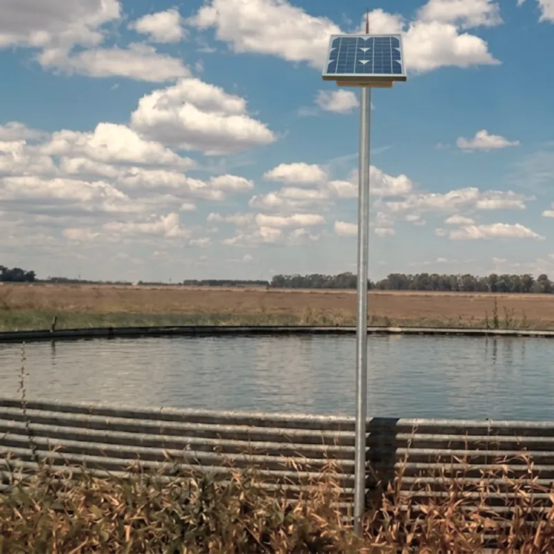
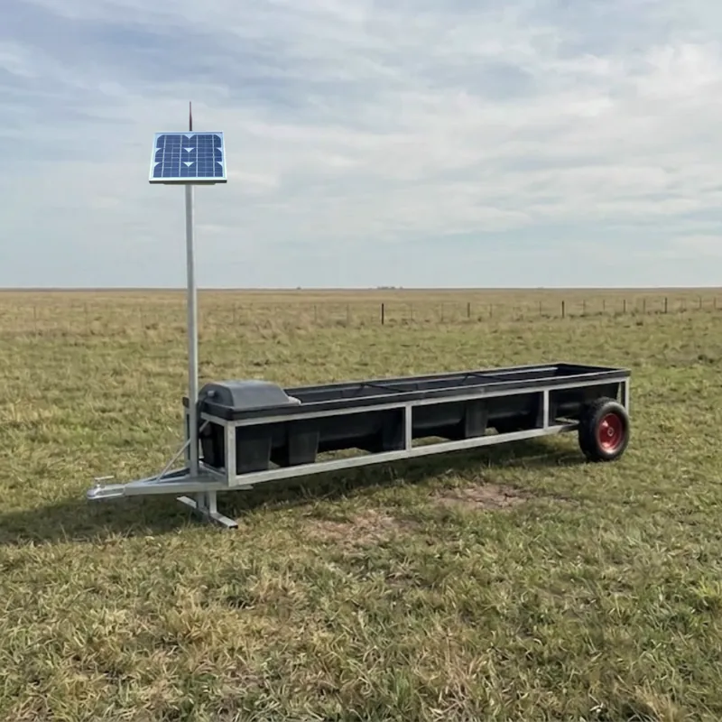
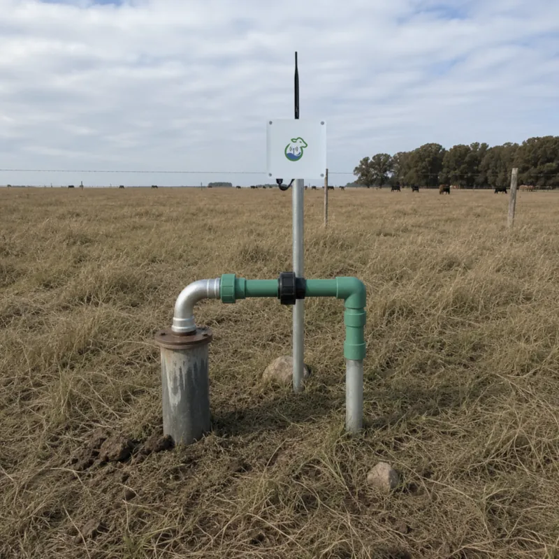
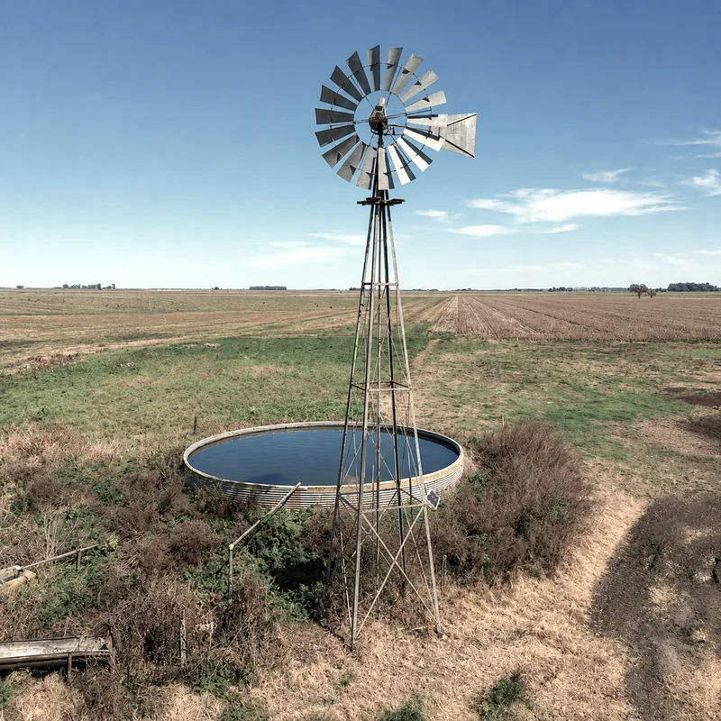
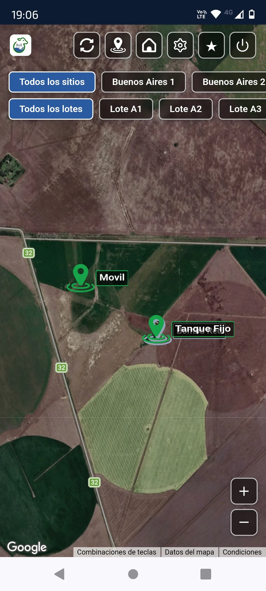
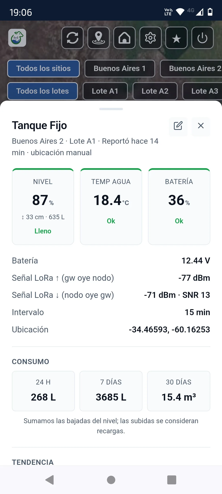

Monitoreo para tanques, bebederos y represas. En tiempo real, alertas al celular, todo en una sola app.
AguaSens es un sistema de monitoreo de aguadas modular que se instala sobre cualquier infraestructura que ya tengas en el campo. El sistema consiste en Nodos inteligentes que se encargan de medir las variables críticas y un módulo Gateway que recibe los datos para subirlos a la nube. Elegí el nodo adecuado según lo que necesites monitorear y visualizá todo en la misma app.

Para Tanques, bebederos fijos y Represas
Ideal para conocer el estado de la reserva estratégica de agua de tu campo.

Para Bebederos Móviles
Pensado para acompañar la rotación de parcelas y prevenir estrés térmico.

Para Bombas eléctricas
Control total sobre el funcionamiento y rendimiento de la bomba de extracción.

Para Molinos de Viento
Supervisá la actividad del molino y asegurá el funcionamiento.
Hoy, entre que se corta el agua y alguien se entera pasa en promedio la mitad del tiempo entre recorridas. Con AguaSens, 15 minutos. Calculá lo que eso vale en tu campo →
Se instala sobre el tanque, bebedero, represa o bomba.
El nodo se comunica de forma inalámbrica con el gateway. El gateway se conecta a internet a través de WiFi o 4G.
Desde el celular ves todos tus puntos de medición, recibís alertas y tomás decisiones con datos reales.


Medición automática. Sabés cuánta agua tiene cada tanque, bebedero o represa sin hacer una sola recorrida. Alerta inmediata cuando el nivel baja del umbral configurado.
Cada nodo reporta su posición. El mapa muestra dónde está cada nodo sin registrar nada a mano. Movés un bebedero y la ubicación se actualiza desde la app.
Mide temperatura y humedad ambiente y calcula el estrés térmico del ganado en tiempo real. Recibís alerta antes de que aparezcan los síntomas en el rodeo.
Sensor sumergible que monitorea a qué temperatura está el agua en el tanque. Fundamental en verano para asegurar que el agua esté en condiciones de ser bebida y no limite el consumo del animal.
Monitorea el caudal de extracción en tiempo real. Permite detectar obstrucciones o caídas de rendimiento antes de que falte agua en los tanques.
Supervisa el amperaje y voltaje de la bomba. Previene quemaduras de motor por sobrecarga o trabajo en vacío.
Mide la profundidad del nivel dinámico del pozo, asegurando que la bomba trabaje siempre sumergida.
Registra el movimiento mecánico del molino. Fundamental para saber si está bombeando cuando hay viento o si requiere mantenimiento.
Un nodo por tanque, bebedero o represa. Todos reportando de manera automática. Sabés el estado de cada aguada sin moverte de donde estés.
Cuando el nivel baja del umbral configurado, recibís un mensaje al instante. Sin esperar al recorrido del encargado.
Arrancá con 1 nodo y sumá más cuando quieras. Cada nodo nuevo se agrega al sistema.
Bomba rota, flotante atascado, pérdida de agua, molino trabado... El sistema lo detecta en minutos, no días.
Registro completo del consumo. Detecta tendencias anormales antes de que se conviertan en emergencias.
El productor que no reside en el campo tiene el mismo control que si estuviera ahí. Mapa, datos y alertas en el celular.
Un bovino adulto en pastoreo consume entre 8 y 10 litros de agua por cada kilo de materia seca ingerida. Ante cualquier restricción hídrica, sea por nivel bajo, falla en la bomba o distancia excesiva al bebedero, el animal reduce primero el consumo de materia seca, y con él, la ganancia de peso. Según el NRC, una reducción del 20 % en el consumo de agua provoca una caída del 10–12 % en el consumo de materia seca, con impacto directo e inmediato en la ganancia diaria de peso (GDP).
En la práctica, un rodeo de invernada de 100 novillos que bebe de un bebedero en lugar de una represa gana 1.000 kg de carne más en un ciclo de engorde de 100 días (100 g/día por animal, diferencia medida y publicada por Bica et al., 2021). Al precio de mercado del novillo (~ US$ 2,85/kg, SIO Carnes - Agosto 2026), eso son unos US$ 2.850 por ciclo. AguaSens no instala el bebedero: avisa cuando dejó de funcionar, que es justo cuando el animal vuelve a la represa o se queda sin agua.
El acceso permanente y sin restricciones al agua — con bebederos bien ubicados y en funcionamiento — es la intervención de menor costo y mayor retorno en cualquier sistema ganadero. Monitorear el nivel y la ubicación de cada bebedero en tiempo real no es tecnología de lujo, es el paso siguiente al alambrado eléctrico.
Una falla de bomba descubierta tarde, un verano sin monitoreo o animales que caminan de más pueden costar más que la inversión total del sistema en cuestión de semanas. AguaSens no es un gasto: es el seguro productivo más barato del campo.
Los valores de equipos no incluyen el costo de instalación: varía según la distancia, el tipo de infraestructura y la cantidad de puntos a monitorear en cada campo. Pedí tu presupuesto marcando tus aguadas en el mapa y te lo cotizamos a medida. Y si querés ver si se paga en tu campo con tus propios números, usá la calculadora de retorno.
Usá nuestras herramientas de cálculo para dimensionar tus aguadas y analizar el impacto de la distancia al agua en la producción.
Dimensioná la cantidad y tamaño de bebederos que necesita tu campo según cantidad de animales, clima y tipo de producción.
Abrir calculadora →Analizá cuántos kilos de ganancia diaria se pierden por la distancia que los animales caminan hasta el agua.
Abrir calculadora →Marcá en un mapa satelital dónde van tus aguadas y dónde tenés señal para el Gateway, y pedí tu presupuesto a medida.
Pedir presupuesto →Cargá tus recorridas y las fallas de agua que tuviste el último año, y calculá en cuánto tiempo se paga el sistema en tu campo.
Calcular retorno →Somos una empresa enfocada en la innovación aplicada al agro. Desarrollamos sistemas IoT para el monitoreo de aguadas ganaderas, permitiendo supervisar en tiempo real bombas, molinos, tanques, bebederos y represas desde cualquier lugar.
Acompañamos al productor rural con herramientas prácticas y confiables que ayudan a prevenir fallas en el suministro de agua, ahorrar tiempo y mejorar la eficiencia operativa del establecimiento.
Ser el aliado tecnológico del productor ganadero en el cuidado del agua y el bienestar animal, impulsando una gestión más eficiente, conectada y sustentable del campo.
Desarrollar soluciones simples, confiables e inteligentes para monitorear el abastecimiento de agua en establecimientos ganaderos, brindando información en tiempo real y alertas remotas que permitan prevenir problemas, optimizar recursos y aportar tranquilidad al productor.
Escribinos y te ayudamos a dimensionar el sistema para tu campo. Sin compromiso.